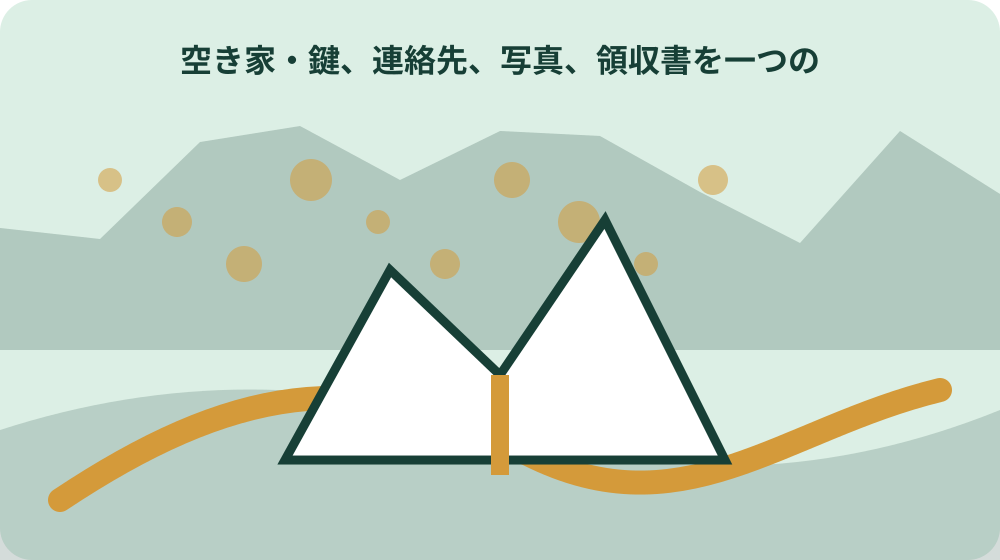
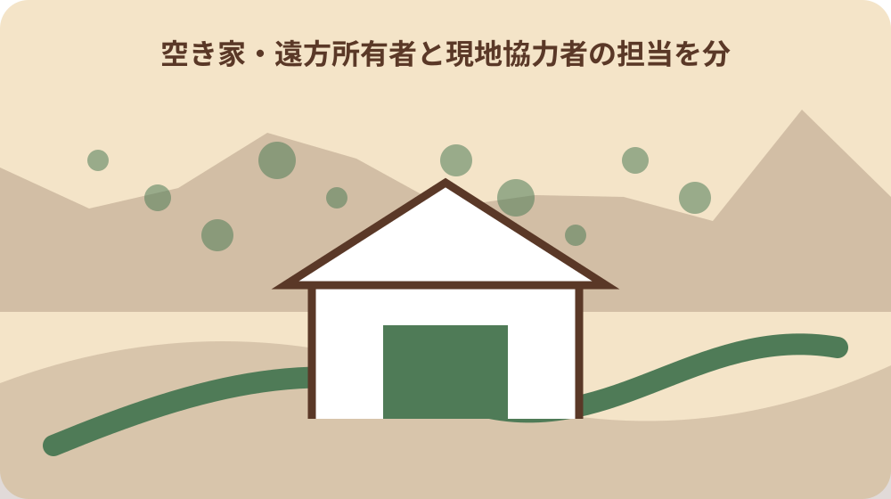

先に結論を確認する
この記事の答え：触れずに退避できる状態を確保し、生体、死骸、糞尿、毛・足跡、巣、音・臭いを分け、場所・時刻・写真番号を残して町や専門業者へ相談します。
森町で最初に照合する条件：動物名を自己判断せず痕跡と確認者を分ける
動物名を決める前に痕跡一件票を開く
森町の空き家で糞、毛、足跡、鳴き声、天井裏の物音、断熱材の乱れを見つけても、すぐに動物名を確定しません。所在地、発見日、場所、痕跡、写真、接触の有無、侵入口候補、衛生、建物被害を一件票へ分けます。
この記事の答えは、痕跡へ触れず安全な距離から記録し、生きた動物がいる、蜂の巣がある、糞尿がある、建物が壊れているという状態ごとに、町相談、専門業者、衛生清掃、修繕へ振り分けることです。
表紙には物件番号、所在地、発見者、鍵担当、立入した範囲、発見時刻、同席者、次の確認担当を書きます。『ハクビシン』『アライグマ』など推定名は、根拠と確認者が得られるまで候補欄に置きます。
既存の有害鳥獣記事は農作物被害や捕獲制度を扱います。本稿は無人家屋内部・屋根裏・床下・軒下の痕跡を、衛生と建物修繕へ渡す所有者用記録に限定します。
完了条件は動物を捕まえることではありません。発見者が接触せず退避し、痕跡の位置と範囲が残り、侵入口を塞ぐ前の生体確認、清掃、消毒、修繕の順を専門家と相談できることです。
最初の記録は発見場所一か所から始めます。写真番号と部屋番号を一致させ、家族が図面から同じ場所を特定できるか確認します。
生きた動物・死骸・糞・巣を分ける
最初に、生きた動物が見える、死骸らしい物がある、糞尿だけ、毛や足跡だけ、巣や卵がある、鳴き声や臭いだけを分けます。状態が違えば接近の危険と相談先も変わります。
生きた動物を追い込む、素手で捕まえる、出口を急に塞ぐことはしません。人やペットを別の場所へ移し、部屋を閉じられる場合も安全な経路を確保して専門先へ相談します。
死骸や糞尿には直接触れず、場所、数、広がり、乾湿、周囲の汚れを離れて記録します。採取して家へ持ち帰る、一般ごみへ即断して入れることは避けます。
巣や卵、幼獣らしいものがある場合は、法律上の扱いや保護対象を所有者が判断しません。写真を撮るために近づかず、県や町の案内、専門家へ状態を伝えます。
音や臭いだけなら時刻、継続時間、天候、部屋、天井・壁・床のどこから感じたかを記します。音だけで頭数や種類、建物被害を確定しません。
刺激や攻撃の兆候があれば扉を閉めることにも固執せず、その場を離れます。退出後に人の安全を確認してから連絡します。
立入前に人の安全と退出路を確保する
長期間閉じた空き家へ入る前に、外から窓、屋根、軒、換気口、床下口、扉の破損を見ます。動物だけでなく、腐食、落下物、割れたガラス、電気、水、蜂など別の危険を確認します。
一人で天井裏や床下へ入りません。足場、照明、通信、退出路を確保し、異臭、激しい物音、攻撃行動、崩れ、電気設備の異常があれば入室を中止します。
マスクや手袋などの装備が必要かは作業内容と専門家の指示で決めます。装備を着けたことを安全保証にせず、捕獲・回収・大量清掃は専門業者へ相談します。
子ども、持病のある人、ペットを同行させません。発見者の体調に異変や咬傷・掻傷がある場合は、物件記録より先に医療機関等へ相談します。
退出時は触れた場所、使用した道具、衣服、靴を記録し、汚染範囲を広げないよう分けます。自己流の消毒剤混合や、痕跡の広範囲な掃き上げを行いません。
空き家へ入った時刻と出た時刻を家族へ知らせます。通信が届かない場所では、入室前に戻る予定と連絡方法を決めます。
痕跡を部屋・高さ・写真番号で残す
平面図または手描き図へ玄関、部屋、天井、床下、軒、物置を記し、痕跡番号を置きます。『二階に糞』ではなく、部屋番号、壁からの距離、高さ、範囲を記録します。
写真は全景、中景、近景を安全な範囲で撮り、定規等を痕跡へ直接触れさせません。撮影日、方角、部位、連番をファイル名へ入れ、加工前原本を残します。
足跡は大きさ、向き、連続、地面の種類を記録します。毛は色、長さ、付着場所、量を見える範囲で記し、素手で拾い集めません。
糞尿は個数、形状、広がり、染み、臭い、天井材や断熱材への影響を記します。動物名を当てるための画像検索だけに頼らず、専門家へ位置関係も渡します。
前回写真がある場合は変化を比べます。古い痕跡と新しい痕跡を見た目だけで確定せず、発見日と確認できた範囲を別々に残します。
撮影した画像は個人のメッセージ内だけに残さず物件フォルダーへ移します。送信先と閲覧範囲を必要最小限にします。

侵入口候補を塞ぐ前に生体確認する
軒裏、換気口、屋根の隙間、壊れた窓、床下口、配管周り、基礎の穴を侵入口候補として番号化します。穴があることと、今回の動物が使ったことは分けます。
内部に生体や幼獣が残る状態で入口を塞ぐと、別の場所を壊す、内部で死ぬなどの問題につながり得ます。所有者だけで封鎖順を決めず、専門業者へ生体確認と退出方法を相談します。
侵入口の写真には寸法、材質、周囲の爪跡・汚れ、雨仕舞、電線・配管を記します。単に金網を当てるのではなく、建物修繕として耐久性と水の侵入も確認します。
複数の穴がある場合は、主要・予備と断定せず全候補を一覧にします。塞いだ日、材料、施工者、確認方法、再侵入の有無をDay57の修繕履歴へ渡します。
屋根や高所、狭い床下の確認は無理に行いません。未確認箇所を図へ残し、業者の現地調査範囲と見積り範囲を一致させます。
穴を塞げなかった場合は危険な応急処置をせず、写真と寸法を業者へ渡します。雨水侵入や換気への影響も質問します。
衛生清掃と建物修繕を別工程にする
糞尿や死骸の回収、汚染材の撤去、清掃・消毒と、屋根・天井・断熱材・配線・換気口の修繕は別の工程です。一社へ頼む場合も作業項目と完了確認を分けます。
清掃前に痕跡位置と汚染範囲を写真で残します。証拠を残すために放置するのではなく、専門家が必要情報を確認した後、安全な方法で清掃へ進みます。
天井染み、断熱材の乱れ、配線の傷、木材の腐食、臭いを部位別にします。動物が原因と断定できない傷みは、原因未確認として建築・電気等の専門家へ渡します。
清掃後は臭いだけで完了を決めません。対象範囲、撤去物、使用した方法、換気、立入再開条件、次回確認を作業報告で照合します。
修繕完了後も一定期間、音、臭い、新しい糞、入口周辺の痕跡を確認します。観察期間は種類や工法を踏まえて業者と決め、記事が一律日数を指定しません。
清掃用具を別の家へ持ち込む前に専門家の指示を確認します。使用した物と廃棄・洗浄の扱いを記録します。
森町の空き家資料で生活環境影響を確認する
森町の空き家・空き地バンク確認票は、目視による害獣被害の有無を独立した確認項目にしています。雨漏り、白蟻、外壁、基礎、残置物とは別欄にして状態を説明します。
森町の第2期空家等対策計画資料は、動物の棲みつき、悪臭、鳴き声、毛や羽の飛散、ねずみ・はえ・蚊の発生、周辺家屋への侵入などを生活環境への影響として整理しています。
計画資料の基準は、所有者が見つけた痕跡だけで特定空家等を自己判定するための表ではありません。周辺への影響を町へ説明する観察項目として使います。
近隣へ影響がある場合は、発生日、場所、頻度、臭い、音、飛散、侵入の事実を分けます。近隣の感情や動物名の推測を、確認済み事実として町へ伝えません。
町へ相談したら、担当課、相談日、伝えた内容、案内された次の窓口を記録します。町への相談が捕獲・清掃・修繕の代行契約になるとは扱いません。
町の資料へある項目を、個別物件の行政認定と混同しません。相談時の共通語として使い、町の回答日を残します。
蜂・野生鳥獣・飼い主不明動物を混同しない
森町の蜂の駆除案内は、空き地・空き家などで所有者や管理者が不明な場合は住民生活課へ連絡するよう案内しています。所有者が分かる自分の空き家では、所有者側の対応を先に整理します。
蜂が飛んでいる、巣がある、家屋内の哺乳類らしい痕跡がある、飼い主不明の猫が出入りする状況は同じ窓口や方法とは限りません。状態を混ぜず公式案内へ確認します。
森町の有害鳥獣ページは鳥獣被害防止計画や目撃情報への入口です。農作物被害の制度を家屋内部の駆除制度と読み替えず、対象と担当を相談時に確認します。
静岡県は、けがをした野生鳥獣を見つけても、安易に持ち帰ったり動物園へ直接持ち込んだりしないよう案内しています。空き家内でも捕獲後の持込先を自己判断しません。
種の特定、捕獲許可、保護対象、回収可否は写真一枚で決めません。専門家や所管へ、場所、状態、生死、巣・幼獣の有無、接触の有無を伝えます。
蜂の巣らしいものは巣の位置、高さ、人の通路との関係を遠くから伝えます。防護服なしの接近や薬剤散布をしません。
見積りを調査・清掃・封鎖・修繕に分ける
業者見積りは現地調査、生体確認、追い出し・捕獲等、死骸や糞尿の回収、清掃・消毒、侵入口封鎖、建物修繕、再点検を別行にします。
動物種や頭数が未確認なら、確定前の見積り条件を明記します。追加費用が発生する状態、作業できない範囲、保証対象、再訪条件を質問します。
侵入口封鎖だけ、清掃だけ、修繕だけの見積りを比べる際は、同じ作業範囲だと誤解しません。写真番号と部位番号を各社へ渡し、含む・含まないを横並びにします。
薬剤や装置の使用は対象、場所、注意事項、居住再開、ペットや周辺への配慮を確認します。所有者が商品説明だけで安全性や効果を断定しません。
契約後は施工日、担当、写真、撤去物、封鎖箇所、修繕材、支払、保証、次回確認を一件番号へ戻します。口頭説明だけで完了にしません。
複数見積りでは最安額より工程の欠落を確認します。清掃後に誰が入口を修繕し、再発を誰が確認するかを一行でつなぎます。

家族と近隣へ必要範囲だけ返す
家族共有では、現場写真、接触の有無、立入停止範囲、業者手配、次回期限を伝えます。刺激の強い写真を無目的に拡散せず、閲覧者と保管期限を決めます。
近隣から連絡を受けた場合はDay58の連絡カードへ戻し、周辺への影響と対応状況だけを必要範囲で返します。費用、相続、契約など不要な個人情報は伝えません。
鳴き声や臭いが収まったという連絡だけで、生体不在、衛生回復、侵入口修繕済みとは判断しません。各工程の担当者の報告を照合します。
家族が現地へ交代で入る場合は、未清掃範囲、触れない物、閉鎖した部屋、鍵、保護具、退出手順を引き継ぎます。口頭だけでなく入口の注意票と台帳を同期します。
完了報告には確認できたこと、未確認、再発時の写真位置、業者連絡先を残します。次の担当が動物名の推測からやり直さず、痕跡番号から再開できる形にします。
結果連絡は対応中か完了かを明確にし、専門家の調査前に安全になったと伝えません。近隣へ追加の監視を求めないことも確認します。
大石の視点：捕獲より先に接触を止める
ここまでの森町の害獣確認項目、空家計画の生活環境影響、蜂の案内、県の傷病野生鳥獣案内は公的資料で確認できる事実です。個別の種、捕獲、衛生措置、修繕は専門先へ確認します。
私、大石浩之は、動物名を当てる前に『触れない、追わない、塞がない、持ち帰らない』の停止欄を作ることを勧めます。これは森町の指定様式ではなく、接触や閉じ込めを避けるための実務提案です。
所有者が急いで穴を塞ぐと、内部の生体や別の入口を見落とす可能性があります。生体確認、衛生清掃、侵入口封鎖、建物修繕を順番に並べ、担当の回答を待ちます。
空き家バンクへ出す予定があっても、害獣なしという説明を痕跡清掃だけで確定しません。調査範囲、施工、経過観察、未確認箇所を分けて説明します。
一件票の価値は動物図鑑ではありません。誰がどこで何を見て、接触せず、どの専門工程へ渡し、建物と衛生をどこまで回復したかを追えることです。
大石案の停止欄は表紙へ置きます。動物に出会った瞬間でも読める短い表現にし、詳しい工程は退避後に確認します。
再発確認と修繕履歴へ渡して閉じる
作業後は痕跡番号、侵入口番号、清掃範囲、封鎖箇所、修繕箇所を照合します。番号が余った場合は未対応、別原因、確認不要の理由を残し、削除しません。
再発確認では同じ場所の新しい糞、毛、足跡、音、臭い、封鎖材の変化を見ます。確認頻度と期間は業者の説明と建物状態に応じて決めます。
侵入口や天井等の修繕はDay57の履歴へ渡し、着手前・施工中・完了後の写真、領収書、保証を保存します。本稿は痕跡発見から工程分岐までを担当します。
近隣連絡先や現地担当が変わったらDay58のカードを更新します。別台帳を増やすだけで連絡先が食い違わないよう、元データと更新日を決めます。
最終結論は、動物名を確定して駆除したと宣言することではありません。接触せず痕跡を残し、生体、衛生、侵入口、建物修繕を分け、再発確認まで一件番号でつなぐことです。
台帳を閉じる前に、写真リンク、業者報告、修繕履歴、次回日を開いて確かめます。未確認は担当と期限を付けて残します。